Relatório de projeto
Observação, pesquisa e desenvolvimento
Resumo
rePraça é um projeto sobre a imaginação de espaços públicos no Rio de Janeiro.
A ideia surge da mistura entre a pesquisa sobre os espaços urbanos com o meu interesse pessoal sobre trabalhar a imaginação desses lugares. Com o foco em praças devido às suas características únicas, o trabalho se desenvolve na reimaginação desses locais pelos usuários por meio de uma plataforma virtual. Desse modo, é possível saber se as características daquele lugar atendem aos desejos da maioria e quais usos que as pessoas imaginam que diferem dos atuais.
Sumário
Introdução
A proposta desse trabalho começa pela minha vontade pessoal: eu sempre tive muito interesse por cidades e pelas histórias por trás delas, e, ao longo do curso, esse interesse foi se fortalecendo. Pelos projetos desenvolvidos na faculdade, meu foco de trabalho foi sendo direcionado principalmente às inúmeras formas de interação que se dão entre as pessoas, a tecnologia e o cenário urbano. Assim, escolhi explorar mais essa interação para o meu último projeto na graduação, buscando me aprofundar nas possibilidades e reflexões que a tecnologia pode trazer aos centros.
Com isso em mente, comecei a pesquisar sobre projetos já existentes que utilizam meios virtuais para trazer soluções ao meio urbano. Os primeiros do tipo que eu encontrei foram serviços em que os cidadãos podem fiscalizar áreas da cidade e serviços prestados por órgãos públicos, como os aplicativos 1746, da Prefeitura do Rio de Janeiro, e o Colab.
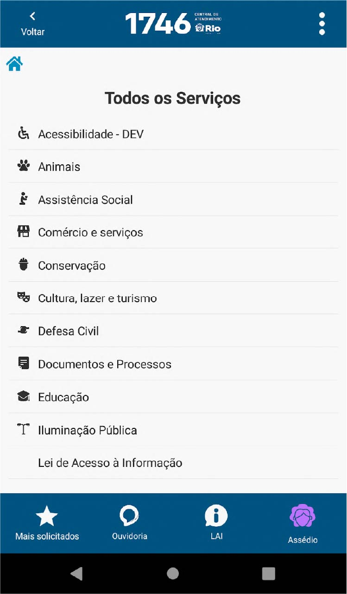
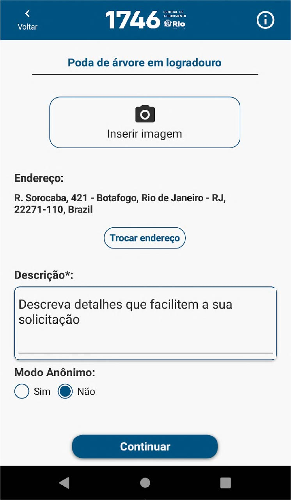
O 1746 é o aplicativo oficial da Prefeitura do Rio de Janeiro e funciona como forma de comunicação oficial entre cidadãos e governo municipal. Nele, as pessoas podem fazer reclamações ou abrir solicitações sobre os mais diversos assuntos da cidade, como poda de árvores, remoção de entulhos, conserto de iluminação, fiscalização de estabelecimentos ou denúncias. O funcionamento é simples: o usuário acessa o site ou aplicativo, seleciona a categoria na qual deseja abrir um protocolo, descreve a situação e envia o pedido para o órgão público responsável, que irá responder e, talvez, solucionar a solicitação.
Já o Colab é um aplicativo que começou em Recife no ano de 2013 e se expandiu pelo Brasil, tendo como diferencial ser administrado por uma empresa privada que, para servir de ponte para as reclamações entre cidadãos e prefeituras, cria parcerias com os órgãos governamentais. O funcionamento segue uma linha similar ao do 1746, em que você pode selecionar uma categoria e realizar sua solicitação. Além disso, o aplicativo tenta criar um senso de comunidade, disponibilizando enquetes e conteúdos sobre cidadania para engajar os usuários.
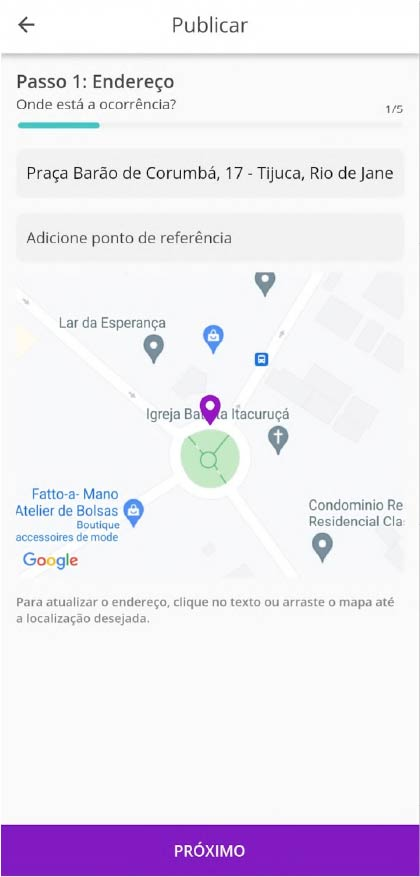
Com esses dois exemplos, concluí que eles eram exatamente o que eu não estava interessado: plataformas para fiscalização, onde uma pessoa reclama e a prefeitura responde, finalizando toda a operação até que uma nova reclamação surja. Esses serviços, por mais que essenciais para o bom funcionamento das cidades, têm uma pegada muito curta e burocrática, enquanto que para esse projeto eu queria algo mais livre, criativo e que tivesse uma duração maior.
Outro exemplo que encontrei nas pesquisas, dessa vez na linha de algo um pouco mais criativo, foi o Fórum da ALERJ de Desenvolvimento do Rio, em que cidadãos e parlamentares podem discutir propostas e tópicos que talvez se transformem em ideias para legislação de todo o Estado do Rio de Janeiro. Entretanto, esse fórum ocorre no interior da Assembleia Legislativa, no centro da cidade, com trabalhos geralmente ocorrendo em horário comercial. Por mais que seja a casa representativa da população, a ALERJ não é um espaço muito aberto para os que não conhecem sua estrutura, portanto os debates do fórum acabam se fechando em pequenos grupos normalmente formados por especialistas e pessoas mais ligadas ao funcionalismo público.
Ainda durante essa linha de pesquisa inicial, feita para definir a temática do projeto, encontrei também o trabalho I Wish This Was, da artista Candy Chang na cidade de New Orleans, nos Estados Unidos.
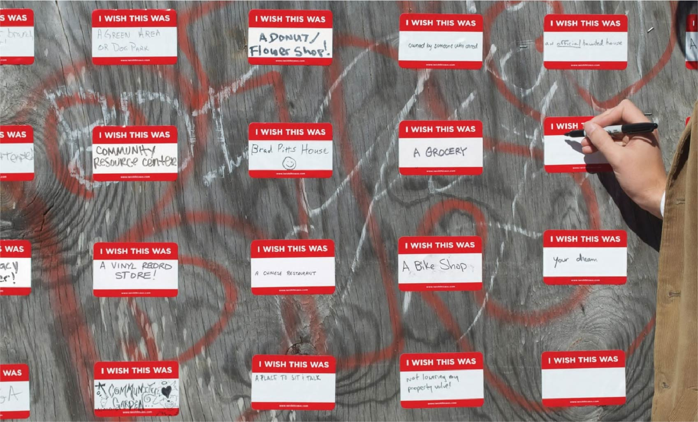
Na instalação, a artista colou pequenos adesivos nos quais se lia "I Wish This Was" ("Eu queria que isso fosse", em português) seguido por um espaço em branco, onde as pessoas eram convidadas a escrever o que elas gostariam que existisse ali.
A obra foi criada depois que Chang reparou na quantidade de casas e estabelecimentos abandonados que ela via pelas ruas. Ela decidiu usar dos adesivos como uma maneira de incentivar a imaginação coletiva daqueles espaços, de modo a poder visualizar posteriormente o conjunto de pensamentos individuais de todos que participaram, como é possível ver na imagem acima.
No Brasil, uma ideia semelhante a essa foi a obra Liberte seus Sonhos, realizada na Lapa, no Rio de Janeiro, pela artista Gabriela Valente, que a define como "uma intervenção urbana de arte relacional que convida a comunidade e transeuntes a compartilhar seus sonhos em murais interativos e assim cocriar novos espaços de ser e estar". Nesse caso, a artista reparou em um muro de um prédio abandonado próximo ao local onde ela morava, e decidiu transformar aquela parede em um grande mural no qual as pessoas que ali passavam poderiam escrever seus sonhos usando giz de cera.
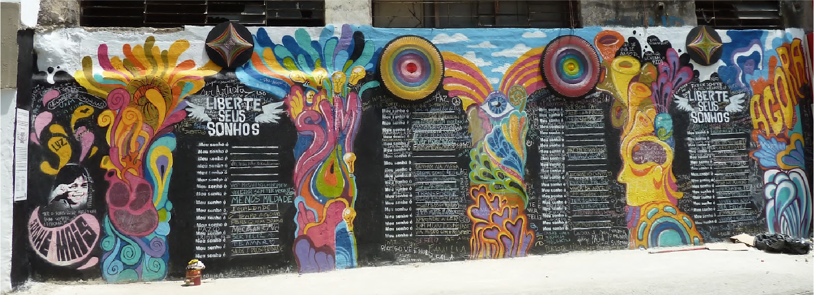
Por mais que nessa obra os sonhos não sejam específicos sobre o local, deixando a interpretação aberta para que escrevam sobre qualquer tipo de sonho que tenham, essa proposta se relaciona muito com a anterior pela ideia de convidar as pessoas a imaginarem algo e compartilhar isso com os outros, gerando também um grande painel em que é possível ver todas as individualidades juntas.
Definição do Tema
Se as plataformas de fiscalização da cidade eram o caminho que eu não queria seguir, a proposta de imaginar espaços públicos e ter a visão do conjunto das imaginações de cada pessoa me cativou muito. Além disso, trabalhar a imaginação com pessoas mais velhas é uma ótima oportunidade, pois o público adulto costuma ser mais apático, tendo uma tendência maior a apenas aceitar as coisas do jeito que são e seguir em frente. Trazer de volta essa capacidade de imaginação, que costuma ser muito atribuída ao público infantil e acaba se perdendo com o tempo, será essencial para qualquer proposta de intervenção na cidade.
Assim, juntando o interesse pessoal por cidades com a oportunidade de trabalhar a imaginação, vindo dos projetos similares, o tema do projeto foi definido como:
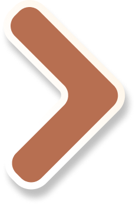
Incentivo à imaginação utilizando os espaços da cidade como cenário.
A ideia, portanto, é de incentivar a reflexão sobre o espaço com a quebra do esperado, daquilo que já existe no local. A imaginação extrapola a crítica pois ela não se restringe ao já existente; a proposta é que o usuário possa conceber novas estruturas, de pequeno ou médio porte, para a cidade.
Geração de Alternativas
Com o tema definido, comecei a pensar diferentes maneiras que poderiam abordar a imaginação nos nossos arredores. A primeira alternativa pensada foi construir uma plataforma colaborativa de sugestões e melhorias da cidade. A proposta era de elaborar um mapa em que as pessoas pudessem adicionar propostas baseadas em locais reais, junto de uma descrição que o usuário escreveria com apoio de um guia na plataforma. O principal problema dessa ideia foi que, por mais que as pessoas já vejam problemas na cidade no seu cotidiano, como quebrar a inércia e incentivá-las a participar da plataforma, sugerindo melhorias que talvez nunca se tornem realidade?
A proposta de projeto, então, começou a sofrer algumas mudanças. Primeiro, o foco, que anteriormente era apenas uma plataforma social, mudou para algo mais próximo de um jogo, pelo entendimento de que uma experiência gameficada traz elementos recompensadores que engajam mais os usuários do que uma rede social. Além disso, uma segunda leitura do tema do projeto me fez questionar que ele não tinha que ser sobre projetar algo para a cidade, mas também poderia ser algo apenas sobre ou na cidade. A imaginação pode ser sobre coisas tomadas como "úteis", que tenham um reflexo prático visto nas ruas, ou de coisas não tão importantes, em que a imaginação ocorre apenas por ela mesma, sem nenhum impacto no mundo real.
Nessa linha de raciocínio foram consideradas algumas novas alternativas, sendo elas:
Uma galeria pública de arte virtual, em que usuários poderiam projetar obras em 3D e instalá-las digitalmente no mundo real ao seu redor;
Um jogo simulador de cidade, em que o cenário surgiria a partir do mapa real daquele lugar e o jogador poderia editar os pontos próximos a ele;
Um jogo de modelo narrativo, em que os usuários controlariam times de personagens fictícios e batalhariam pelo controle de bairros da cidade.
Todas essas ideias trazem em comum a questão de que a imaginação pode apenas utilizar a cidade como cenário e não como sujeito ativo do processo, sem necessariamente trazer resultados ou possibilidades que solucionem problemas do cotidiano dos cidadãos.
Além disso, em todas as alternativas até aqui a intenção era trabalhar a imaginação em toda a cidade, sem uma restrição espacial específica. O problema, porém, é que a área contemplada pelos "espaços da cidade" é muito ampla, e isso dificultaria qualquer troca entre os usuários. Para que o processo de incentivo à imaginação possa acontecer da maneira mais potente possível, é muito importante que as ideias de um usuário sejam vistas, exploradas, comparadas e até editadas pelas demais pessoas, pois nessa interação entre o que cada um pensou é que o processo fica mais marcante. Entretanto, se o projeto ficar disperso por cada metro da cidade, a chance de dois usuários trabalharem o mesmo local se reduz muito, enfraquecendo as possibilidades de troca.
Assim, a última mudança de caminho do projeto foi a troca de foco geográfico, partindo de algo que abordasse a cidade inteira, sem restrições, para algo direcionado a alguns pontos específicos.
No livro Urbanismo Tático X Ações para Transformar Cidades, os autores definem as praças como "um espaço público de permanência e convivência". Essa característica desses lugares atende a questão do fortalecimento do processo de incentivo à imaginação com as trocas entre pessoas. Trabalhar um espaço que já seja coletivo e de convivência ajuda a fortalecer o caráter social do projeto, e o caráter social ajuda a fortalecer o processo imaginativo, pois expõe o usuário às ideias de dezenas de outras pessoas e não só às dele.
Por esse motivo, o cenário para esse projeto foi definido como as praças do Rio de Janeiro. Com o local definido, a alternativa escolhida foi de reprojetar praças da cidade em um ambiente virtual. A ideia é que o usuário tenha acesso a uma planta da praça selecionada e uma lista com todos os itens do mobiliário urbano da cidade, podendo projetar aquele espaço da maneira que quiser, compartilhando o resultado no final. Essa proposta atende a ideia de incentivar a imaginação, pois propõe que cidadãos possam reimaginar espaços públicos que, por muitas vezes, eles já conhecem e frequentam. Essa possibilidade de reprojetar o já conhecido incentiva a reflexão sobre o estado atual dos locais e também questiona que nem tudo precisa ser do jeito que é.
Similares
Por mais que a proposta aqui não seja construir um jogo, mas sim uma plataforma com elementos de um, é na linha de videogames que possibilitam a construção de mundos virtuais que a maioria dos similares desse conceito estão, com jogos que permitem a remodelagem de ambientes através de módulos, sendo um dos mais famosos o Minecraft. Nesse jogo, você controla um personagem em primeira pessoa que possui uma infinidade de blocos diferentes, podendo selecioná-los de uma espécie de "gaveta" para construir qualquer tipo de coisa que imaginar.
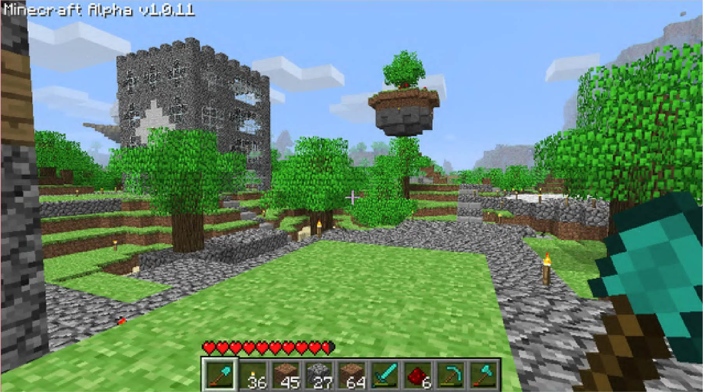
Minecraft segue bem a ideia de permitir que o jogador construa uma infinidade de coisas diferentes, porém fornece liberdade demais no espaço ao entregar o mundo inteiro para ser construído. Como a ideia do projeto é imaginar apenas a área de uma praça, o similar seguinte é o jogo The Sims.
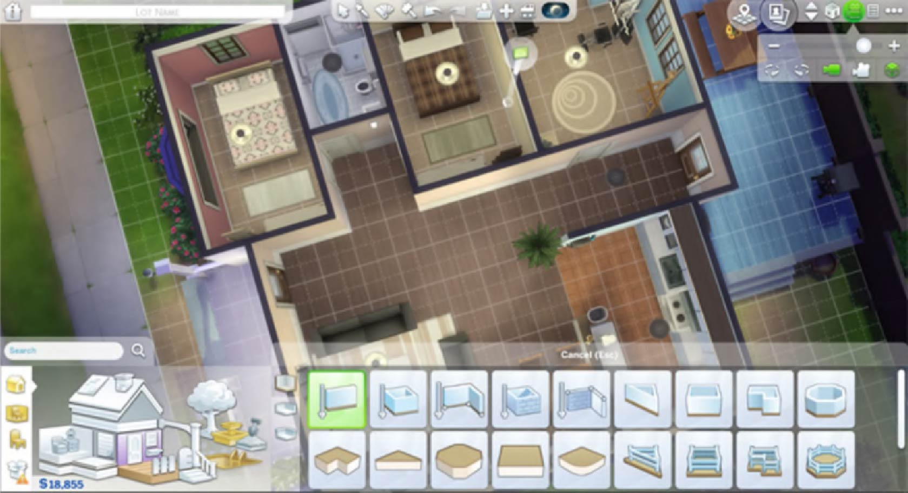
Em The Sims, o jogador possui também uma vasta seleção de objetos e módulos para montar sua casa, mas precisa fazer isso dentro do espaço delimitado pelo terreno de sua residência e nada a mais. Essa ideia já se aproxima mais da proposta de projeto, pois a imaginação do jogador fica restrita ao tamanho do terreno que simula uma propriedade real.
Além desses dois, uma plataforma virtual baseada em ruas reais é o Streetmix.
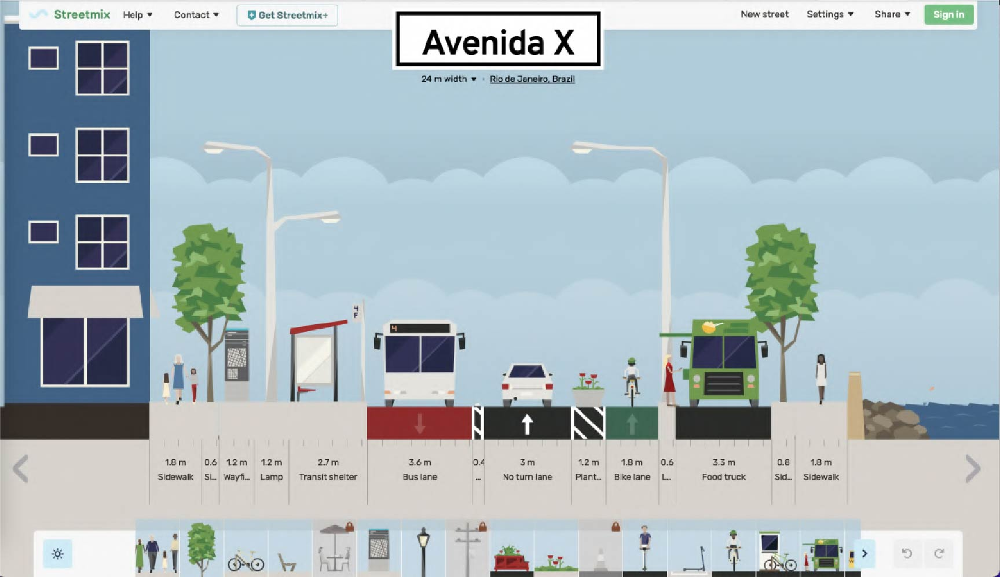
O site possibilita que você escolha uma rua de verdade, selecione sua largura e imagine outro desenho viário para ela, podendo explorar outras formas de faixas de carro, faixas exclusivas de ônibus, bondes, jardins, ciclovias, espaço para pedestres, dentre outros
Por fim, um último similar é o jogo Townscaper, que segue uma linha mais criativa e menos atrelada ao mundo físico real.
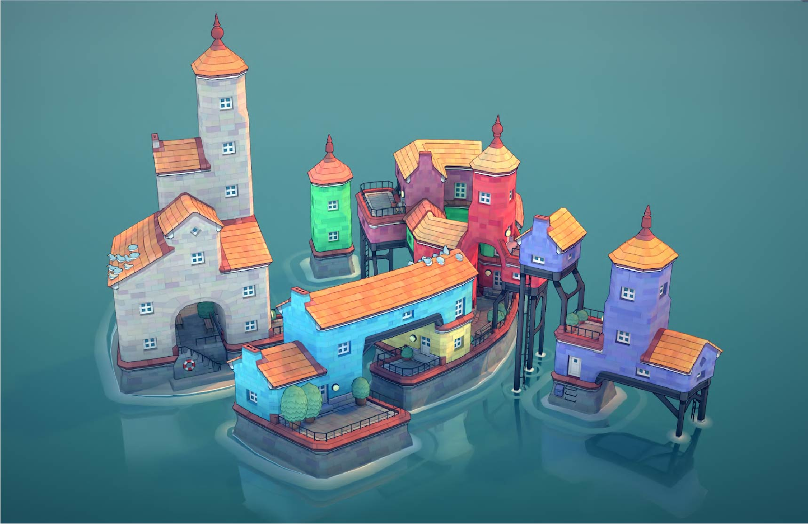
Nesse jogo, você escolhe a cor do prédio e vai clicando livremente pela grid, construindo casinhas daquela cor. O que torna esse conceito interessante é a automatização do gameplay, pois dependendo de onde você constrói algo todo o entorno é moldado, criando arcos, pilares, caminhos e demais estruturas necessárias.
Essa possibilidade de o jogo controlar uma parcela do projeto é interessante para retirar parte da carga do jogador. No caso do projeto rePraça, um exemplo seria que o usuário adicione os itens e peças de mobiliário na praça enquanto a plataforma constrói, sozinha, os caminhos e áreas livres ao redor do que for adicionado.
Estudo de Praças
Com a alternativa escolhida e os similares analisados, o próximo passo foi me aprofundar em algumas praças da cidade e entender suas dinâmicas. Para isso, escolhi utilizar as metodologias abordadas no livro How to Study Public Life (Como Estudar a Vida Pública, em português), no qual os autores Jan Gehl e Birgitte Svarre abordam as características únicas da vida nas cidades e quais métodos utilizar para estudá-la. O ponto principal do livro é a importância do observar, ação definida como o "ato de olhar ou estudar algo com carinho e atenção, visando descobrir alguma coisa". Os autores defendem que é preciso aprender a observar, ir a campo e aprender algo mesmo com coisas que pareçam irrelevantes. Por mais que as coisas vistas nas cidades possam aparentar ser banais, é exatamente nessa banalidade que precisamos prestar atenção para ver como a vida se desenha nos espaços públicos.
Além da defesa de que humanos, e não máquinas, façam a coleta de informações, pois pessoas trazem muito mais do que apenas dados frios para análise, o livro utiliza 5 perguntas chave para começar a entender um contexto: quantas pessoas estão ali, quem frequenta tal espaço, onde os visitantes ficam, o que as pessoas fazem e quanto tempo os frequentadores permanecem. Na minha pesquisa eu não respondi precisamente a cada uma dessas perguntas, principalmente devido a falta de tempo para gerar esses dados com alguma precisão, mas mantive elas em mente para traçar um perfil geral de cada praça analisada.
Por fim, antes de escolher os espaços a serem estudados, é preciso ter em mente os diferentes tipos de praças que podem existir. Praças de alto fluxo, em regiões centrais da cidade e que hospedam estruturas de transporte, como estações de metrô e pontos de ônibus, possuem usos e desenhos muito diferentes de praças de bairro, em que o fluxo de passageiros não é tão intenso. Existem também outros tipos de praças e exceções nos tipos listados, como praças em ruas sem saída, que tem uma dinâmica muito única pela proteção do ambiente que elas se encontram.
Com a metodologia acertada, as praças foram escolhidas principalmente pela facilidade de acesso, mas também buscando alguma diversidade na categoria e tamanho dos espaços estudados. Finalmente, as praças escolhidas foram a Nossa Senhora da Paz, em Ipanema, Xavier de Brito, Barão de Corumbá e Gabriel Soares, todas na Tijuca.
Praça #1
Nossa Senhora da Paz
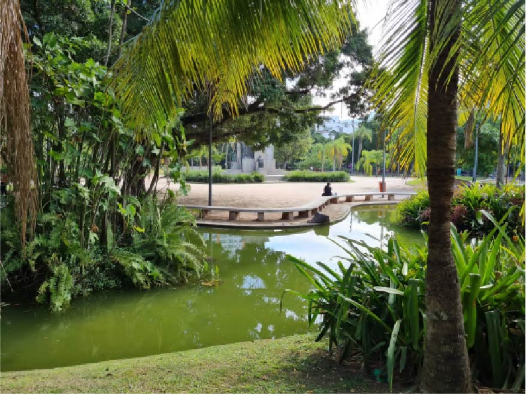
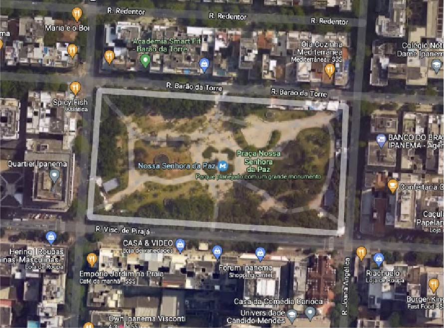
A Praça Nossa Senhora da Paz fica bem no meio do bairro de Ipanema, zona sul do Rio, a dois quarteirões da lagoa e da praia, ao lado de ruas com diversas opções de comércio e restaurantes, além dos prédios de escritório e moradia. Foi totalmente reformada para a construção da estação de metrô de mesmo nome, tendo sido reinaugurada no meio de 2016, quando passou a receber também o fluxo de passageiros utilizando a estação.
Praça #2 Xavier de Brito
Praça #3 Barão de Corumbá
Praça #4 Gabriel Soares
Mobiliário Urbano
Em paralelo ao estudo das praças, foi feito um catalogamento das peças de mobiliário urbano encontradas. Essa pesquisa é essencial, pois, para imaginar as praças, os usuários serão convidados a projetar os espaços utilizando módulos com o mobiliário do jeito que desejarem.

Fluxograma e Wireframe
Com a praça escolhida e o mobiliário categorizado, o passo seguinte foi o desenvolvimento da solução. A ideia é possibilitar a imaginação de praças por meio de uma plataforma virtual, na qual o usuário teria acesso a uma planta do local e uma lista de itens de mobiliário para montar a praça como imaginar.

Desenvolvimento
O aplicativo foi desenvolvido na plataforma Unity. Para contornar a falta de conhecimento técnico aprofundado em programação, utilizei como base tutoriais de jogos do tipo "Tower Defense", adaptando a mecânica de posicionar itens em um mapa para o contexto do projeto.

Demo Day
O Demo Day é o dia de demonstração dos projetos da disciplina. Para o evento, foi desenvolvido um site especial para exibir uma galeria com todas as praças imaginadas pelos visitantes, atualizada em tempo real.

Conclusão
Assim, chega ao fim todo o ciclo de projeto que foi desenvolvido ao longo do ano.
Na pesquisa inicial, um dos primeiros trabalhos analisados foi a obra I Wish This Was, da artista Candy Chang. A obra chamou atenção principalmente pela visualização dos dados obtidos em uma grid de adesivos que, ao mesmo tempo que respeitava as imaginações individuais, também as reunia em uma única visualização. Isso faz com que qualquer pessoa possa ver de forma geral o todo, porém continue sendo capaz de analisar a fundo cada ideia em particular.
Essa proposta foi transportada com sucesso para o projeto aqui descrito, com o uso da galeria de praças sendo utilizado para o mesmo ideal: reunir as individualidades e expor as imaginações como inspiração para os demais usuários. Essa vontade foi também comprovada durante o Demo Day, quando diversos visitantes tiveram novas ideias justamente ao olharem a galeria de praças.
Com os resultados obtidos no Demo Day, é possível também constatar que o projeto obteve sucesso no tema de incentivar a imaginação das pessoas. Por diversas vezes os visitantes brincaram com as possibilidades dos objetos na praça, tornando a tarefa de imaginar o espaço em uma atividade lúdica.
A praça, que por muitas vezes é tratada apenas como um ambiente que está ali, no nosso cotidiano, virou personagem central de uma experiência que permite questionar o formato das coisas já existentes. Durante os testes ficou claro como essa proposta foi bem aproveitada pelos usuários, que exploraram a criatividade e formaram diversas combinações de objetos que, normalmente, não são vistas nos espaços reais. Não há como saber se esse questionamento dos formatos vai ser levado para frente por alguma pessoa, gerando reflexões mais profundas sobre o tópico, ou se ficará apenas na brincadeira do momento, sem resultar em grandes questionamentos. No entanto, esse ambiente virtual dá lugar à liberdade criativa e traz resultados concretos: as fotos das praças imaginadas. Além disso, também garante que os jogadores se sintam livres o suficiente para testar e experimentar novas combinações que, se não forem práticas, seriam no mínimo divertidas de serem vistas no mundo real.
Pessoalmente, acredito que essa é a principal conquista do projeto: permitir que o cenário real e burocrático do planejamento urbano possa ser levado de forma divertida, em uma brincadeira que traz reflexões e novas propostas de uso para os espaços públicos trabalhados.
Também são nessas novas propostas que vive um outro ponto alto do trabalho: a capacidade de gerar ideias para o planejamento urbano de forma colaborativa. Ao gerar os arquivos finalizados de cada praça imaginada, o que estamos produzindo na verdade é uma grande base de dados do interesse da população quanto ao uso daquele espaço. Se a maior parte das pessoas criar um parquinho infantil em uma praça que nem sequer brinquedos possui, por exemplo, esse fato pode indicar uma demanda reprimida por itens infantis naquela região. É possível então usar essas informações para estudos mais aprofundados, gerando sugestões ao poder público quanto a reformas e propostas de melhorias para as praças da cidade.
Para o futuro
Um desenvolvimento futuro do rePraça teria como prioridade atender o feedback obtido durante os testes, como, por exemplo, o de possibilitar que o painel de informações seja minimizado enquanto navega pela grid de objetos. Além disso, seria necessário também modelar e adicionar mais itens de mobiliário, expandindo as possibilidades e dando maior escolha aos usuários.
Durante o Demo Day, a montagem da galeria de praças foi feita de forma manual. Cada vez que uma pessoa terminava de montar sua praça, eu ia até o tablet e enviava cada arquivo das imagens produzidas ao site. No futuro, para o rePraça ser publicado em uma loja de aplicativos, sendo instalado em diversos aparelhos diferentes e fora do meu controle, um ponto crucial seria a conexão da plataforma com um banco de dados virtual, de modo a poder receber as informações e imagens das praças imaginadas vindas de cada aparelho remotamente.